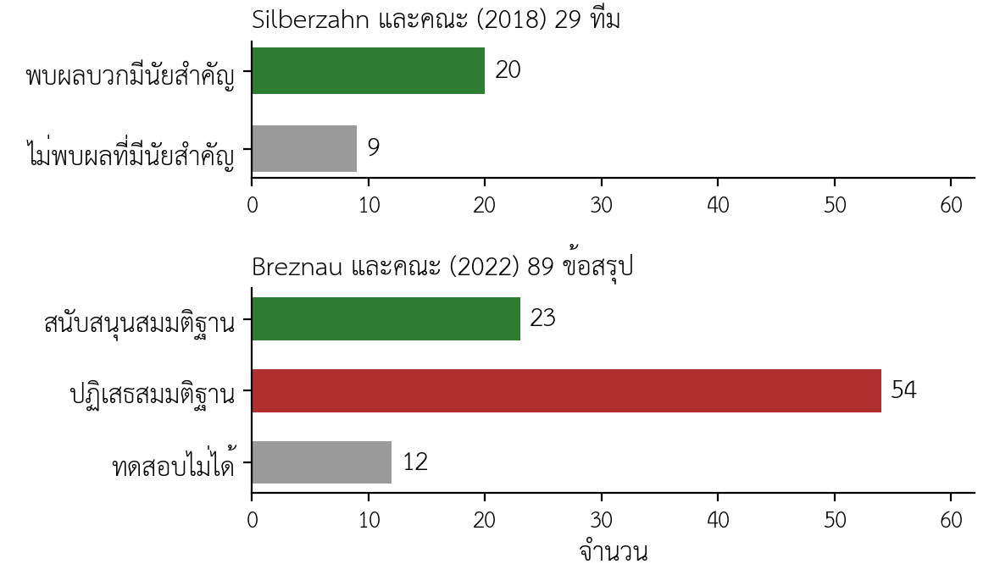
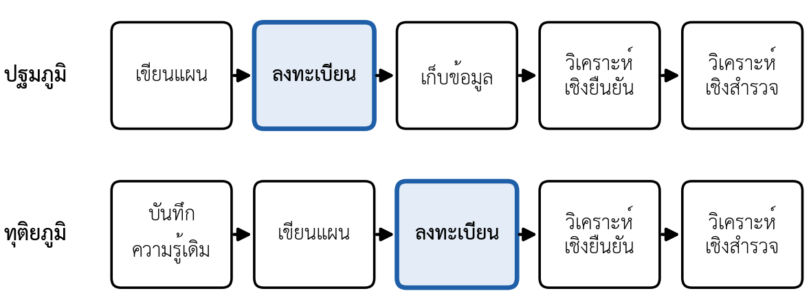

บทที่ 3 ลงทะเบียนแผนวิเคราะห์ก่อนเห็นผล
เมื่อศึกษาบทนี้จบแล้ว นิสิตสามารถ
- อธิบายว่าทางเลือกเชิงวิเคราะห์ที่สมเหตุสมผลหลายทางทำให้ผลการวิจัยจากข้อมูลชุดเดียวกันต่างกันได้อย่างไร โดยยกหลักฐานจากงานนักวิเคราะห์หลายทีมได้
- จำแนกการวิเคราะห์เชิงยืนยันออกจากการวิเคราะห์เชิงสำรวจในแผนวิจัยของตนได้
- เลือกแม่แบบการลงทะเบียนล่วงหน้าที่เหมาะกับแหล่งข้อมูลและระดับการศึกษาของตนได้
- จัดทำแผนวิเคราะห์ตามแม่แบบที่เลือก พร้อมเกณฑ์ตัดสินสมมติฐานและวันที่ลงทะเบียนได้ (ใบงานที่ 3)
- เลือกแนวปฏิบัติการรายงานที่ตรงกับแบบการวิจัยของตนได้
ความนำ
บทที่ 2 จบด้วยแผนภาพเชิงสาเหตุและรายการตัวแปรควบคุมพร้อมเหตุผล นิสิตหลายคนคิดว่าเมื่อมีสองสิ่งนี้แล้ว ขั้นต่อไปคือเก็บหรือเปิดข้อมูลแล้ววิเคราะห์ได้เลย บทนี้เสนอว่ายังมีอีกขั้นที่ต้องทำก่อน คือเขียนแผนวิเคราะห์ให้ละเอียดและบันทึกไว้พร้อมวันที่ ก่อนเห็นผลการวิเคราะห์ ขั้นนี้เรียกว่า การลงทะเบียนล่วงหน้า (preregistration)
เหตุผลของขั้นนี้ไม่ใช่ความไม่ไว้ใจผู้วิจัย แต่มาจากธรรมชาติของการวิเคราะห์ข้อมูล ระหว่างข้อมูลดิบกับตัวเลขในตารางผล ผู้วิจัยต้องตัดสินใจหลายสิบจุด เช่น จะตัดผู้ตอบรายใดออก จะจัดการข้อมูลสูญหายอย่างไร และจะใส่ตัวแปรควบคุมตัวใด แต่ละจุดมีทางเลือกที่สมเหตุสมผลมากกว่าหนึ่งทาง ถ้าผู้วิจัยตัดสินใจหลังเห็นผล ก็มีโอกาสเลือกทางที่ให้ผลตรงกับที่หวังโดยไม่รู้ตัว
บทนี้เริ่มจากหลักฐานว่าทางเลือกเชิงวิเคราะห์ทำให้ผลต่างกันมากเพียงใด แล้วอธิบายว่าความยืดหยุ่นนี้ทำให้ผลบวกลวงเพิ่มขึ้นอย่างไร จากนั้นเสนอแม่แบบลงทะเบียนสำหรับข้อมูลทุติยภูมิและแม่แบบสั้นสำหรับปริญญาโท แนวปฏิบัติการรายงานที่ควรเลือกตั้งแต่ขั้นนี้ และรูปแบบ Registered Report สำหรับนิสิตปริญญาเอก ท้ายบทเป็นกรณีศึกษาเดินเรื่องของปริมและธามต่อจากบทที่ 2
3.1 นักวิเคราะห์หลายทีม ข้อมูลชุดเดียวกัน
วิธีหนึ่งที่ใช้วัดผลของทางเลือกเชิงวิเคราะห์คือการศึกษาแบบนักวิเคราะห์หลายทีม (many-analysts study) ผู้จัดส่งข้อมูลชุดเดียวกันและคำถามเดียวกันให้หลายทีมวิเคราะห์อย่างอิสระ แล้วเทียบผลที่ได้ ถ้าผลต่างกันมาก แสดงว่าคำตอบขึ้นกับทางเลือกของผู้วิเคราะห์ ไม่ได้ขึ้นกับข้อมูลอย่างเดียว
3.1.1 กรณีใบแดงในฟุตบอล
Silberzahn และคณะ (2018, p. 338) ให้นักวิเคราะห์ 61 คนใน 29 ทีม ใช้ข้อมูลชุดเดียวกันตอบคำถามว่ากรรมการให้ใบแดงผู้เล่นผิวเข้มมากกว่าหรือไม่ ขนาดผลที่ทีมต่าง ๆ ได้อยู่ระหว่าง 0.89 ถึง 2.93 ในหน่วยอัตราส่วนออดส์ (odds ratio) มัธยฐาน 1.31 มี 20 ทีมพบผลบวกที่มีนัยสำคัญ และ 9 ทีมไม่พบความสัมพันธ์ที่มีนัยสำคัญ การวิเคราะห์ 29 แบบใช้ชุดตัวแปรควบคุมต่างกันถึง 21 แบบ และความเชื่อเดิมหรือระดับความเชี่ยวชาญของนักวิเคราะห์อธิบายความต่างของผลไม่ได้ (Silberzahn et al., 2018, p. 338)
3.1.2 กรณีการย้ายถิ่นกับการสนับสนุนนโยบายสังคม
Breznau และคณะ (2022) ขยายการศึกษาแบบเดียวกันให้ใหญ่ขึ้น นักวิจัย 161 คนใน 73 ทีม ใช้ข้อมูลชุดเดียวกันทดสอบสมมติฐานเดียวกัน (Breznau et al., 2022, p. 1) มี 72 ทีมที่ส่งแบบจำลองรวม 1,261 แบบ (Breznau et al., 2022, pp. 2–3) และผู้วิจัยพบการตัดสินใจเชิงวิเคราะห์ที่ต่างกัน 166 จุด (Breznau et al., 2022, p. 3)
ผลที่น่าสนใจที่สุดคือที่มาของความต่าง ความแปรปรวนของผลร้อยละ 95.2 อธิบายไม่ได้ การตัดสินใจเชิงแบบการวิจัยอธิบายได้ร้อยละ 2.6 และลักษณะของนักวิจัยอธิบายได้ไม่เกินร้อยละ 1.2 ส่วนข้อสรุปของทีม 12 จาก 89 ข้อสรุปว่าทดสอบไม่ได้ 54 ว่าปฏิเสธสมมติฐาน และ 23 ว่าสนับสนุน (Breznau et al., 2022, p. 4)
ตารางที่ 3.1 สรุปสองกรณี และภาพที่ 3.1 แสดงการกระจายของข้อสรุป
ตารางที่ 3.1 สรุปการศึกษาแบบนักวิเคราะห์หลายทีมสองเรื่อง
| รายการ | Silberzahn และคณะ (2018) | Breznau และคณะ (2022) |
|---|---|---|
| คำถาม | กรรมการให้ใบแดงผู้เล่นผิวเข้มมากกว่าหรือไม่ | การย้ายถิ่นเข้าลดการสนับสนุนนโยบายสังคมของประชาชนหรือไม่ |
| ผู้วิเคราะห์ | 61 คน 29 ทีม | 161 คน 73 ทีม |
| ความหลากหลายของการวิเคราะห์ | ชุดตัวแปรควบคุม 21 แบบ | แบบจำลอง 1,261 แบบ การตัดสินใจต่างกัน 166 จุด |
| ข้อสรุป | 20 ทีมพบผลบวกมีนัยสำคัญ 9 ทีมไม่พบ | สนับสนุน 23 ปฏิเสธ 54 ทดสอบไม่ได้ 12 จาก 89 ข้อสรุป |
| สิ่งที่อธิบายความต่างไม่ได้ | ความเชื่อเดิมและความเชี่ยวชาญของนักวิเคราะห์ | ลักษณะของนักวิจัย อธิบายได้ไม่เกินร้อยละ 1.2 |
ที่มา ผู้เขียนสรุปจาก Silberzahn et al. (2018, p. 338) และ Breznau et al. (2022, pp. 1–4)

ที่มา ผู้เขียนวาดจากตัวเลขใน Silberzahn et al. (2018, p. 338) และ Breznau et al. (2022, p. 4)
3.1.3 บทเรียนสำหรับงานของนิสิต
บทเรียนจากสองกรณีไม่ใช่ว่าการวิเคราะห์ส่วนใหญ่ผิด ทีมเหล่านี้เป็นนักวิจัยที่มีความรู้ และทางเลือกส่วนใหญ่มีเหตุผลรองรับ บทเรียนคือทางเลือกที่สมเหตุสมผลมีหลายทาง และผลที่ได้ขึ้นกับทางที่เลือก ในงานวิทยานิพนธ์ซึ่งมีผู้วิเคราะห์คนเดียว ผู้อ่านเห็นเพียงทางเดียวที่นิสิตเลือก ถ้านิสิตเลือกทางนั้นหลังเห็นผล ผู้อ่านไม่มีทางรู้ว่าผลจะเปลี่ยนหรือไม่ถ้าเลือกทางอื่น
3.2 ความยืดหยุ่นของผู้วิจัยและผลบวกลวง
ทางเลือกเชิงวิเคราะห์ที่ผู้วิจัยตัดสินได้เองเรียกรวมกันว่า ความยืดหยุ่นของผู้วิจัย (researcher degrees of freedom) Simmons และคณะ (2011, pp. 1359–1361) แสดงว่าความยืดหยุ่นที่ไม่เปิดเผยทำให้อัตราผลบวกลวง (false positive) สูงกว่าระดับ .05 ที่ผู้วิจัยตั้งไว้มาก ผลบวกลวงคือการสรุปว่าพบผล ทั้งที่ในความจริงไม่มีผล
ผู้เขียนกลุ่มนี้จำลองความยืดหยุ่นสี่แบบ ได้แก่ การเลือกตัวแปรตามจากหลายตัว การกำหนดขนาดตัวอย่างหรือหยุดเก็บข้อมูลตามผลที่เห็น การใส่ตัวแปรร่วม และการรายงานเฉพาะบางเงื่อนไขของการทดลอง (Simmons et al., 2011, pp. 1360–1361) เมื่อใช้ทั้งสี่แบบร่วมกัน อัตราผลบวกลวงที่ระดับ p < .05 สูงถึงร้อยละ 60.7 (Simmons et al., 2011, p. 1361 ตาราง 1) กล่าวคือ ในสถานการณ์จำลองที่ไม่มีผลจริง ผู้วิจัยที่ใช้ความยืดหยุ่นครบทั้งสี่แบบจะพบผลที่มีนัยสำคัญมากกว่าครึ่งของครั้งที่ทำ
ความยืดหยุ่นสี่แบบนี้พบได้ในงานวิจัยบริหารธุรกิจทั่วไป นิสิตที่ใช้แบบสอบถามมักวัดผลลัพธ์หลายตัว และตัดสินว่าจะตัดผู้ตอบรายใดหลังเห็นข้อมูล นิสิตที่ใช้ข้อมูลทุติยภูมิมีตัวแปรควบคุมให้เลือกมาก และมีทางเลือกในการนิยามตัวแปรหลายแบบ Simmons และคณะ (2011, p. 1359) จึงเสนอข้อกำหนดสำหรับผู้แต่ง 6 ข้อ และแนวทางสำหรับผู้ประเมินบทความ 4 ข้อ เพื่อให้ความยืดหยุ่นเหล่านี้ปรากฏต่อผู้อ่าน
3.3 การลงทะเบียนแผนวิเคราะห์ล่วงหน้า
การลงทะเบียนล่วงหน้าคือการเขียนสมมติฐาน วิธีวัด เกณฑ์คัดเข้าและคัดออก และแผนวิเคราะห์ ให้ละเอียดพอที่คนอื่นทำตามได้ แล้วบันทึกไว้ในที่ที่แก้ย้อนหลังไม่ได้พร้อมวันที่ ก่อนผู้วิจัยเห็นผลการวิเคราะห์ที่ใช้ตัดสินสมมติฐาน ที่บันทึกที่ใช้กันมากคือเว็บไซต์ Open Science Framework (OSF) สำหรับวิทยานิพนธ์ ผู้เขียนเสนอว่าถ้ายังไม่พร้อมลงทะเบียนในที่สาธารณะ ให้ส่งแผนให้อาจารย์ที่ปรึกษาทางอีเมลและเก็บไว้พร้อมวันที่เป็นอย่างน้อย
3.3.1 แยกการวิเคราะห์เชิงยืนยันกับเชิงสำรวจ
การลงทะเบียนไม่ได้ห้ามการวิเคราะห์ที่ไม่ได้วางแผนไว้ สิ่งที่ทำคือแยกการวิเคราะห์สองแบบออกจากกัน การวิเคราะห์เชิงยืนยัน (confirmatory analysis) คือการทดสอบสมมติฐานที่เขียนไว้ก่อนเห็นข้อมูล ด้วยวิธีที่กำหนดไว้ก่อน ส่วนการวิเคราะห์เชิงสำรวจ (exploratory analysis) คือการค้นหาแบบแผนในข้อมูลที่ไม่ได้วางแผนไว้ ผลแบบหลังมีประโยชน์ในการสร้างสมมติฐานใหม่ แต่ใช้ยืนยันสมมติฐานไม่ได้ เพราะสมมติฐานเกิดจากข้อมูลชุดเดียวกับที่ใช้ทดสอบ
ผู้เขียนเสนอหลักปฏิบัติสำหรับวิทยานิพนธ์ว่า ผลที่ไม่ได้อยู่ในแผนลงทะเบียนรายงานได้เสมอ แต่ต้องอยู่ในหัวข้อเชิงสำรวจที่แยกจากผลเชิงยืนยัน และต้องเขียนว่าการวิเคราะห์นั้นไม่ได้วางแผนไว้ก่อน
3.3.2 ข้อมูลทุติยภูมิก็ต้องลงทะเบียน
นิสิตที่ใช้ข้อมูลทุติยภูมิมักคิดว่าการลงทะเบียนใช้กับการเก็บข้อมูลใหม่เท่านั้น เพราะข้อมูลมีอยู่แล้ว Van den Akker และคณะ (2021, p. 1) ชี้ว่าแนวทางลงทะเบียนที่มีอยู่ออกแบบสำหรับการเก็บข้อมูลใหม่เป็นหลัก แต่การวิเคราะห์ข้อมูลเดิมก็ต้องลงทะเบียน เพราะความรู้เดิมเกี่ยวกับข้อมูลอาจทำให้สมมติฐานและการวิเคราะห์มีอคติ Mertens และ Krypotos (2019, p. 338) เสริมว่างานที่ใช้ข้อมูลที่มีอยู่แล้วต่างจากการเก็บข้อมูลใหม่ เพราะผู้วิจัยเปลี่ยนแบบการวิจัยไม่ได้
ความต่างนี้ทำให้แผนลงทะเบียนสำหรับข้อมูลทุติยภูมิต้องมีสิ่งที่แผนสำหรับข้อมูลใหม่ไม่มี คือการเปิดเผยว่าผู้วิจัยเห็นข้อมูลส่วนใดไปแล้ว และเคยวิเคราะห์อะไรจากข้อมูลชุดนี้ การลงทะเบียนหลังเห็นข้อมูลบางส่วนจึงยังมีประโยชน์ ถ้าบอกตามจริงว่าเห็นอะไรไปแล้ว
ภาพที่ 3.2 เปรียบเทียบลำดับเวลาของการลงทะเบียนในสองแทร็ก

ที่มา ผู้เขียนวาดจากหลักการใน Van den Akker et al. (2021, p. 1) และ Mertens and Krypotos (2019, p. 338) กรอบสีน้ำเงินคือจุดที่บันทึกแผนพร้อมวันที่ ในแทร็กทุติยภูมิ ข้อมูลมีอยู่ก่อนแผน ผู้วิจัยจึงต้องบันทึกความรู้เดิมว่าเห็นอะไรในข้อมูลไปแล้วก่อนเขียนแผน
3.4 แม่แบบสำหรับการวิเคราะห์ข้อมูลทุติยภูมิ
Van den Akker และคณะ (2021, p. 1) เสนอแม่แบบลงทะเบียนสำหรับการวิเคราะห์ข้อมูลทุติยภูมิ 25 ข้อ เผยแพร่ที่ OSF (doi 10.17605/OSF.IO/U68Y7) ผู้เขียนแม่แบบรายงานว่าการกรอกทำได้จริง ช่วยจำกัดความยืดหยุ่นของผู้วิจัย และทำให้เลือกข้อมูลและการวิเคราะห์อย่างตั้งใจมากขึ้น (Van den Akker et al., 2021, p. 1) ตารางที่ 3.2 จัดกลุ่มข้อทั้ง 25 ข้อ
ตารางที่ 3.2 กลุ่มข้อในแม่แบบลงทะเบียนสำหรับข้อมูลทุติยภูมิ
| ข้อ | เนื้อหา | หน้า |
|---|---|---|
| 1–4 | ชื่อเรื่อง ผู้แต่ง คำถามวิจัย สมมติฐาน | p. 3 |
| 5–9 | ชื่อชุดข้อมูล การเปิดเผยข้อมูล วิธีเข้าถึง วันดาวน์โหลด วิธีเก็บข้อมูลเดิม | pp. 4–5 |
| 10–13 | คู่มือรหัสข้อมูล (codebook) ตัวแปรที่จัดกระทำ ตัวแปรที่วัด หน่วยวิเคราะห์และเกณฑ์คัดเข้า | pp. 6–8 |
| 14–16 | ข้อมูลสูญหาย ค่าผิดปกติ (outlier) น้ำหนักตัวอย่าง | pp. 9–11 |
| 17–18 | งานที่ผู้วิจัยเคยตีพิมพ์จากข้อมูลชุดนี้ และความรู้เดิมที่มีต่อข้อมูล | pp. 11–12 |
| 19–25 | แบบจำลอง ขนาดผล กำลังทดสอบ เกณฑ์การอนุมาน การละเมิดข้อตกลงเบื้องต้น การวิเคราะห์ความทนทาน การวิเคราะห์เชิงสำรวจ | pp. 13–15 |
ที่มา ผู้เขียนสรุปจาก Van den Akker et al. (2021, pp. 3–15)
ข้อที่นิสิตปริญญาโทและเอกที่ใช้ข้อมูลทุติยภูมิมักตอบอ่อนที่สุดคือข้อ 17 และ 18 ผู้เขียนเสนอให้ตอบเป็นรายการ ได้แก่ วันที่ดาวน์โหลดข้อมูลครั้งแรก ตัวแปรที่เคยเปิดดู สถิติที่เคยคำนวณ เช่น ตารางสหสัมพันธ์ และงานที่เคยเขียนหรือนำเสนอจากข้อมูลชุดนี้ การเขียนว่า "ไม่เคยเห็นข้อมูล" ทั้งที่เคยเปิดดูแล้ว ทำให้แผนลงทะเบียนเสียประโยชน์ทั้งหมด
3.4.1 แม่แบบสั้นสิบคำถาม
Mertens และ Krypotos (2019, p. 345 ตาราง 1) เสนอโครงคำถาม 10 ข้อ ที่สั้นกว่าแม่แบบ 25 ข้อ ได้แก่ สมมติฐาน การวัดตัวแปร แหล่งข้อมูลและเคยตีพิมพ์หรือไม่ วิธีได้ข้อมูลและเคยสำรวจข้อมูลแล้วหรือไม่ เกณฑ์คัดออก การวิเคราะห์และการเตรียมข้อมูล เกณฑ์ยืนยันหรือปฏิเสธสมมติฐาน การตรวจกับข้อมูลส่วนย่อย ความรู้เดิม และลำดับเวลา ผู้เขียนโครงนี้ระบุว่าเป็นแนวทางทั่วไป รายละเอียดต้องปรับตามโครงการ (Mertens & Krypotos, 2019, p. 347)
3.5 แม่แบบสั้นสำหรับปริญญาโท
สำหรับนิสิตปริญญาโทที่เก็บข้อมูลด้วยแบบสอบถาม ผู้เขียนเสนอแม่แบบแปดข้อในตารางที่ 3.3 แม่แบบนี้ผู้เขียนดัดแปลงจากโครงคำถามของ Mertens และ Krypotos (2019) และแม่แบบของ Van den Akker และคณะ (2021) ไม่ใช่แม่แบบที่ตีพิมพ์ นิสิตที่ต้องการแม่แบบที่อ้างอิงได้ในวิทยานิพนธ์ให้ใช้แม่แบบต้นฉบับ
ตารางที่ 3.3 แม่แบบสั้นสำหรับการลงทะเบียนของนิสิตปริญญาโท (ผู้เขียนเสนอ)
| ข้อ | หัวข้อ | สิ่งที่ต้องเขียน | เชื่อมกับ |
|---|---|---|---|
| 1 | สมมติฐานยืนยัน | สมมติฐานทีละข้อ ระบุทิศทาง | แผนภาพในบทที่ 2 |
| 2 | ตัวแปรและมาตรวัด | ตัวแปรทุกตัว มาตรวัด และแหล่งของมาตรวัด | ตารางนิยามในบทที่ 4 |
| 3 | กลุ่มตัวอย่าง | กรอบการสุ่ม วิธีรับสมัคร ขนาดตัวอย่างและที่มาของตัวเลข | บทที่ 5 |
| 4 | เกณฑ์คัดผู้ตอบออก | เกณฑ์เวลาตอบ ข้อตรวจความตั้งใจ การตรวจคำตอบจากบอท | บทที่ 5 และบทที่ 7 |
| 5 | ข้อมูลสูญหาย | วิธีจัดการและเหตุผล | บทที่ 7 |
| 6 | แบบจำลองหลักและเกณฑ์ตัดสิน | วิธีวิเคราะห์ ตัวแปรควบคุม และเกณฑ์ที่ใช้ตัดสินว่าสมมติฐานได้รับการสนับสนุน | บทที่ 2 และบทที่ 7 |
| 7 | การวิเคราะห์เชิงสำรวจ | รายการสิ่งที่จะสำรวจ แยกจากข้อ 6 | หัวข้อ 3.3.1 |
| 8 | วันที่ | วันที่ลงทะเบียน และวันที่เริ่มเก็บข้อมูล | หัวข้อ 3.3 |
ที่มา ผู้เขียนดัดแปลงจาก Mertens and Krypotos (2019, p. 345) และ Van den Akker et al. (2021, pp. 3–15)
3.5.1 เกณฑ์ตัดสินต้องเขียนให้คนอื่นตัดสินแทนได้
ข้อ 6 ของตารางที่ 3.3 เป็นข้อที่เขียนผิดบ่อยที่สุด นิสิตมักเขียนว่า "วิเคราะห์ด้วยการวิเคราะห์ถดถอย" ซึ่งยังเหลือทางเลือกอีกมาก ผู้เขียนเสนอให้ทดสอบเกณฑ์ด้วยคำถามข้อเดียว ถ้าให้เพื่อนที่ไม่รู้ผลอ่านแผนแล้วรันโค้ดเอง เพื่อนจะได้ข้อสรุปเดียวกับนิสิตหรือไม่ ถ้าคำตอบคือไม่แน่ใจ แผนยังไม่ละเอียดพอ ตัวอย่างเกณฑ์ที่ละเอียดพอ เช่น "สมมติฐานที่ 1 ได้รับการสนับสนุน ถ้าค่าสัมประสิทธิ์ของการใช้เครื่องมือ AI ในแบบจำลองหลักที่มีตัวแปรควบคุมตามแผนภาพเป็นบวก และช่วงความเชื่อมั่นร้อยละ 95 ไม่คร่อมศูนย์"
3.5.2 แม่แบบเต็มสำหรับปริญญาเอก
นิสิตปริญญาเอกที่ใช้ข้อมูลทุติยภูมิให้ใช้แม่แบบ 25 ข้อในตารางที่ 3.2 ครบทุกข้อ สำหรับนิสิตปริญญาเอกที่เก็บข้อมูลใหม่ ให้ใช้แม่แบบลงทะเบียนล่วงหน้าของ OSF (OSF Prereg) ซึ่งมีหกส่วน คือ ข้อมูลการศึกษา แผนการออกแบบ แผนการสุ่มตัวอย่าง ตัวแปร แผนการวิเคราะห์ และส่วนอื่น ๆ ในส่วนแผนการสุ่มตัวอย่าง ผู้ลงทะเบียนต้องระบุสถานะของข้อมูล ณ วันลงทะเบียน ตั้งแต่ยังไม่ได้สร้างข้อมูลไปจนถึงวิเคราะห์ข้อมูลแล้ว (Bowman et al., 2020) นิสิตที่เก็บข้อมูลใหม่ควรลงทะเบียนก่อนเริ่มเก็บข้อมูล ผู้เขียนเสนอให้ร่างด้วยแม่แบบสั้นในตารางที่ 3.3 ก่อน แล้วย้ายไปกรอกแม่แบบของ OSF โดยใส่กำลังทดสอบ และการวิเคราะห์ความทนทาน (robustness analysis) ตามข้อ 19 ถึง 25 ของตารางที่ 3.2 ไว้ในส่วนแผนการวิเคราะห์ด้วย
3.6 แนวปฏิบัติการรายงาน
แนวปฏิบัติการรายงาน (reporting guideline) คือรายการสิ่งที่บทความต้องรายงานสำหรับแบบการวิจัยหนึ่ง ๆ นิสิตควรเลือกแนวปฏิบัติตั้งแต่ขั้นลงทะเบียน ไม่ใช่ตอนเขียนบทความ เพราะหลายรายการต้องวางแผนเก็บไว้ตั้งแต่ก่อนเก็บข้อมูล ถ้าไม่ได้เก็บไว้ จะรายงานย้อนหลังไม่ได้ ตารางที่ 3.4 สรุปแนวปฏิบัติที่ใช้ในเอกสารนี้
ตารางที่ 3.4 แนวปฏิบัติการรายงานตามแบบการวิจัย
| แบบการวิจัย | แนวปฏิบัติ | สิ่งที่ต้องวางแผนตั้งแต่ขั้นลงทะเบียน |
|---|---|---|
| แบบสอบถามออนไลน์ | CHERRIES (Eysenbach, 2004) | ระบบป้องกันการตอบซ้ำ และวิธีนับผู้เข้าชม ผู้เริ่มตอบ และผู้ตอบครบ |
| แบบจำลองสมการโครงสร้าง (SEM) | มาตรฐานการรายงานเสริมของ APA สำหรับ SEM (Hoyle & Isherwood, 2013) | การระบุแบบจำลอง วิธีประมาณค่า และดัชนีความกลมกลืนที่จะใช้ |
| ข้อมูลทุติยภูมิและแบบการวิจัยอื่น | มาตรฐานการรายงานของ APA สำหรับงานเชิงปริมาณ (JARS-Quant) ตาราง 1 ใช้กับทุกการศึกษา และมีโมดูลเพิ่มตามแบบการวิจัย เช่น การศึกษาแบบสังเกต และการศึกษาระยะยาว (Appelbaum et al., 2018, pp. 3, 5) หรือแนวปฏิบัติที่ตรงกับแบบการวิจัยจากเครือข่าย EQUATOR ซึ่งรวบรวมไว้มากกว่า 300 แนวปฏิบัติ (Appelbaum et al., 2018, p. 4) | ตามแนวปฏิบัติที่เลือก |
CHERRIES ย่อมาจาก Checklist for Reporting Results of Internet E-Surveys มีวัตถุประสงค์ให้การรายงานการสำรวจทางเว็บครบถ้วน เพื่อให้ผู้อ่านเข้าใจการคัดเลือกตนเองของกลุ่มตัวอย่าง (Eysenbach, 2004) รายการตรวจแบ่งเป็นหมวดแบบการวิจัย จริยธรรมและการคุ้มครองข้อมูล การพัฒนาและทดสอบ การรับสมัคร การบริหารแบบสอบถาม อัตราการตอบ การป้องกันการตอบซ้ำ และการวิเคราะห์ (Eysenbach, 2004, ตารางรายการตรวจ) หมวดอัตราการตอบกำหนดให้รายงานอัตราการเข้าชม (view rate) อัตราการเข้าร่วม (participation rate) และอัตราการตอบครบ (completion rate) โดยนิยามจากผู้เข้าชมไม่ซ้ำ ตัวเลขเหล่านี้ต้องตั้งระบบเก็บไว้ก่อนเปิดแบบสอบถาม รายละเอียดของหมวดอื่นอยู่ในบทที่ 7
สำหรับงานที่ใช้ SEM มาตรฐานของ Hoyle และ Isherwood (2013) กำหนดให้ระบุแบบจำลองละเอียดพอให้ผู้อ่านคำนวณองศาอิสระได้ รายงานโปรแกรมพร้อมรุ่นและวิธีประมาณค่าพร้อมเหตุผล และรายงานดัชนีความกลมกลืนอย่างน้อยสองกลุ่ม (Hoyle & Isherwood, 2013, หัวข้อ Specification, Estimation และ Evaluation of fit) นิสิตที่เขียนสามเรื่องนี้ไว้ในแผนลงทะเบียน จะเขียนส่วนวิธีวิจัยของบทความได้เร็วขึ้น
3.7 Registered Report สำหรับปริญญาเอก
Registered Report คือรูปแบบบทความที่วารสารประเมินและตอบรับข้อเสนอการวิจัยก่อนผู้วิจัยเก็บหรือวิเคราะห์ข้อมูล โดยตัดสินจากคำถาม ทฤษฎี และวิธีการ ไม่ใช่จากผลที่ได้ Chambers และ Tzavella (2021, บทคัดย่อ) รายงานว่ามีหลักฐานเบื้องต้นว่ารูปแบบนี้ได้ผลตามที่ตั้งใจ แต่ไม่ใช่ทางแก้ทุกปัญหาของงานวิจัยที่ทำซ้ำไม่ได้
ในสาขาการจัดการและจิตวิทยาประยุกต์ Briker และ Gerpott (2024, บทคัดย่อ) อธิบายว่าผู้แต่งส่งส่วนต้นของบทความให้ประเมินก่อนเก็บข้อมูล ผู้เขียนกลุ่มนี้พบ Registered Report 50 เรื่องในสาขานี้ สำรวจผู้แต่งและผู้ประเมิน แล้วสรุปเป็นแนวปฏิบัติสำหรับผู้แต่งและผู้ประเมิน
ผู้เขียนเสนอให้นิสิตปริญญาเอกพิจารณารูปแบบนี้เมื่อคำถามวิจัยสำคัญพอที่ผลทั้งสองทิศทางมีคุณค่า และเมื่อกรอบเวลาของการศึกษายอมให้รอผลการประเมินรอบแรกก่อนเก็บข้อมูล ก่อนตัดสินใจ นิสิตต้องตรวจรายชื่อวารสารที่รับรูปแบบนี้ในวันที่จะส่ง และดูว่าสาขาของตนมีวารสารที่รับหรือไม่ เพราะรายชื่อเปลี่ยนตลอด
3.8 การแก้แผนหลังลงทะเบียนและข้อผิดพลาดที่พบบ่อย
แผนลงทะเบียนแก้ได้ งานวิจัยจริงมักพบปัญหาที่ไม่คาดคิด เช่น ข้อมูลไม่มีตัวแปรที่วางแผนไว้ หรือแบบจำลองหลักประมาณค่าไม่ได้ สิ่งที่ทำให้การแก้ยอมรับได้คือการบันทึก ผู้เขียนเสนอให้นิสิตเก็บบันทึกการแก้แผน (deviation log) ที่มีสี่ช่อง ได้แก่ วันที่ สิ่งที่แก้ เหตุผล และแก้ก่อนหรือหลังเห็นผลการวิเคราะห์ที่เกี่ยวข้อง แล้วรายงานบันทึกนี้ในวิทยานิพนธ์ บันทึกนี้ใช้ร่วมกับสมุดบันทึกการตัดสินใจในบทที่ 1
ตารางที่ 3.5 ข้อผิดพลาดที่พบบ่อยและวิธีแก้
| ข้อผิดพลาด | ตัวอย่าง | วิธีแก้ |
|---|---|---|
| ใช้สิ่งที่พบจากการสำรวจข้อมูลเป็นสมมติฐานยืนยัน | เห็นตัวแปรคู่หนึ่งสัมพันธ์กันสูง แล้วเขียนเป็นสมมติฐาน | เขียนสมมติฐานจากทฤษฎีก่อนเปิดข้อมูล ผลจากการสำรวจรายงานในหัวข้อเชิงสำรวจ (Van den Akker et al., 2021, p. 1) |
| เปลี่ยนแผนหลังเห็นผลโดยไม่บันทึก | เปลี่ยนเกณฑ์ตัดผู้ตอบเพราะผลไม่มีนัยสำคัญ | บันทึกทุกการแก้ในบันทึกการแก้แผน (ผู้เขียนเสนอ) |
| ลงทะเบียนหลังวิเคราะห์ไปบางส่วนโดยไม่บอก | เขียนในข้อ 18 ว่าไม่เคยเห็นข้อมูล ทั้งที่เคยดูตารางสหสัมพันธ์ | ตอบข้อ 17 และ 18 ตามจริง (Van den Akker et al., 2021, pp. 11–12) |
| เกณฑ์ตัดสินกว้างเกินไป | เขียนเพียงว่าจะใช้การวิเคราะห์ถดถอย | เขียนเกณฑ์ให้คนอื่นตัดสินแทนได้ตามหัวข้อ 3.5.1 |
| ใช้ความยืดหยุ่นหลายจุดพร้อมกัน | เลือกตัวแปรตาม เกณฑ์ตัดผู้ตอบ และตัวแปรควบคุมหลังเห็นผล | กำหนดทุกจุดไว้ในแผน (Simmons et al., 2011, p. 1361) |
| รอถึงตอนเขียนบทความจึงเลือกแนวปฏิบัติการรายงาน | ไม่ได้ตั้งระบบนับผู้เข้าชม จึงรายงานอัตราการตอบไม่ได้ | เลือกแนวปฏิบัติตามตารางที่ 3.4 ตั้งแต่ขั้นลงทะเบียน (Eysenbach, 2004) |
ปริมมีสมมติฐานยืนยันสองข้อ ข้อแรกคือการใช้เครื่องมือ AI สัมพันธ์ทางบวกกับความผูกพันในงาน ข้อสองคือผลนี้ผ่านภาระงานที่รับรู้บางส่วน ปริมตั้งใจรอให้ได้ข้อมูลครบก่อน แล้วค่อยตัดสินว่าจะตัดผู้ตอบที่ใช้เวลาน้อยออกหรือไม่ และจะใช้ตัวแปรควบคุมชุดใด เพราะคิดว่าเห็นข้อมูลแล้วจะตัดสินได้ดีกว่า
ธามเปิดดูความสัมพันธ์ของตัวแปรหลายคู่ในฐานข้อมูลไปแล้วตั้งแต่บทที่ 1 รวมถึงตารางสหสัมพันธ์ที่มีการลงทุนวิจัยและพัฒนากับ ROA แต่ยังไม่ได้ประมาณแบบจำลองใดที่มี ROA เป็นตัวแปรตาม ธามกำลังจะเขียนแผนลงทะเบียน และอาจารย์ที่ปรึกษาเสนอให้พิจารณาส่งบทความแบบ Registered Report
คำถามชวนคิด แผนของปริมเปิดความยืดหยุ่นแบบใดตามหัวข้อ 3.2 และปริมควรเขียนข้อใดของตารางที่ 3.3 ให้เสร็จก่อนเก็บข้อมูล ส่วนธามยังลงทะเบียนได้หรือไม่ ควรเขียนข้อ 17 และ 18 ว่าอย่างไร และ Registered Report เหมาะกับงานของธามหรือไม่
เมื่อศึกษาบทนี้แล้ว นิสิตสามารถอธิบายด้วยหลักฐานว่าข้อมูลชุดเดียวกันให้ผลต่างกันได้มากตามทางเลือกเชิงวิเคราะห์ ทั้งในกรณีนักวิเคราะห์ 29 ทีมที่ได้ขนาดผลตั้งแต่ 0.89 ถึง 2.93 และกรณีนักวิจัย 73 ทีมที่ความแปรปรวนของผลส่วนใหญ่อธิบายไม่ได้ นิสิตเข้าใจว่าความยืดหยุ่นของผู้วิจัยที่ไม่เปิดเผยทำให้ผลบวกลวงเพิ่มขึ้นมาก และการลงทะเบียนล่วงหน้าเป็นวิธีทำให้ทางเลือกเหล่านั้นปรากฏต่อผู้อ่าน
นิสิตสามารถแยกการวิเคราะห์เชิงยืนยันออกจากเชิงสำรวจ เลือกแม่แบบลงทะเบียนที่เหมาะกับแหล่งข้อมูลและระดับการศึกษาของตน ได้แก่ แม่แบบสั้นแปดข้อสำหรับปริญญาโท และแม่แบบ 25 ข้อสำหรับข้อมูลทุติยภูมิ เขียนเกณฑ์ตัดสินสมมติฐานให้คนอื่นตัดสินแทนได้ เลือกแนวปฏิบัติการรายงานตั้งแต่ขั้นนี้ และรู้ว่าการแก้แผนทำได้เมื่อบันทึกไว้ นิสิตปริญญาเอกรู้จักรูปแบบ Registered Report และสิ่งที่ต้องตรวจก่อนเลือกใช้
ผลของใบงานที่ 3 คือแผนลงทะเบียนที่มีวันที่ ข้อ 2 ของแผน คือตัวแปรและมาตรวัด เป็นจุดตั้งต้นของบทที่ 4 ซึ่งจะนิยามตัวแปรเชิงปฏิบัติการ เลือกมาตรวัด แปล และตรวจความเที่ยงตรงเชิงเนื้อหาสำหรับนิสิตที่เก็บข้อมูลด้วยแบบสอบถาม
- การลงทะเบียนล่วงหน้า (preregistration)
- การศึกษาแบบนักวิเคราะห์หลายทีม (many-analysts study)
- ความยืดหยุ่นของผู้วิจัย (researcher degrees of freedom)
- ผลบวกลวง (false positive)
- การวิเคราะห์เชิงยืนยัน (confirmatory analysis)
- การวิเคราะห์เชิงสำรวจ (exploratory analysis)
- คู่มือรหัสข้อมูล (codebook)
- การวิเคราะห์ความทนทาน (robustness analysis)
- แนวปฏิบัติการรายงาน (reporting guideline)
- Registered Report
- บันทึกการแก้แผน (deviation log)
คำถามทบทวน
- จงอธิบายว่าเหตุใดผลจากการศึกษาแบบนักวิเคราะห์หลายทีมของ Silberzahn และคณะ (2018) และ Breznau และคณะ (2022) จึงไม่ได้แปลว่าการวิเคราะห์ส่วนใหญ่ผิด และบทเรียนที่แท้จริงต่องานวิทยานิพนธ์ที่มีผู้วิเคราะห์คนเดียวคืออะไร
- ความยืดหยุ่นของผู้วิจัยสี่แบบในงานของ Simmons และคณะ (2011) มีอะไรบ้าง จงยกตัวอย่างแต่ละแบบจากงานวิจัยบริหารธุรกิจที่ใช้แบบสอบถาม
- นิสิตคนหนึ่งให้เหตุผลว่า "ผมใช้ข้อมูลทุติยภูมิที่มีอยู่แล้ว จึงไม่ต้องลงทะเบียน และเปิดดูข้อมูลไปแล้วก็ลงทะเบียนไม่ได้อีก" จงประเมินข้อความนี้ทั้งสองส่วน
- จงเขียนเกณฑ์ตัดสินสมมติฐานข้อหนึ่งในงานของตนให้ละเอียดพอตามหัวข้อ 3.5.1 แล้วอธิบายว่าเกณฑ์เดิมที่เขียนว่า "วิเคราะห์ด้วยการวิเคราะห์ถดถอย" ยังเปิดทางเลือกอะไรไว้บ้าง
- เหตุใดนิสิตจึงควรเลือกแนวปฏิบัติการรายงานตั้งแต่ขั้นลงทะเบียน จงยกตัวอย่างรายการใน CHERRIES ที่รายงานย้อนหลังไม่ได้ถ้าไม่ได้วางแผนไว้
ใบงานที่ 3 แผนลงทะเบียนของโครงการตนเอง
ให้นิสิตแต่ละคนจัดทำแผนลงทะเบียนของโครงการวิจัยของตนเอง ความยาวไม่เกินสี่หน้ากระดาษ A4
- ระบุแม่แบบที่เลือก (แม่แบบสั้นในตารางที่ 3.3 หรือแม่แบบ 25 ข้อในตารางที่ 3.2) พร้อมเหตุผลหนึ่งบรรทัด
- แผนที่กรอกครบทุกข้อของแม่แบบที่เลือก ข้อที่ยังตอบไม่ได้ให้เขียนว่าจะตอบได้ในบทใด
- เกณฑ์ตัดสินของสมมติฐานยืนยันทุกข้อ ที่ผ่านการทดสอบตามหัวข้อ 3.5.1
- นิสิตที่ใช้ข้อมูลทุติยภูมิ ตอบข้อ 17 และ 18 ตามจริงเป็นรายการ
- แนวปฏิบัติการรายงานที่เลือกตามตารางที่ 3.4 และรายการที่ต้องตั้งระบบเก็บก่อนเริ่มเก็บหรือเปิดข้อมูล
- วันที่ลงทะเบียนและที่บันทึก (OSF หรืออีเมลถึงอาจารย์ที่ปรึกษา) พร้อมบันทึกการแก้แผนฉบับว่างที่มีสี่ช่องตามหัวข้อ 3.8
เอกสารอ้างอิง
วราวุฒิ นาคบุญนำ. (2569). บทที่ 3 ลงทะเบียนแผนวิเคราะห์ก่อนเห็นผล. ใน เริ่มต้นทำวิจัย จากคำถามถึงชุดข้อมูลที่วิเคราะห์ได้. คณะการบัญชีและการจัดการ มหาวิทยาลัยมหาสารคาม. https://aj-warawut.github.io/academic-web-teaching/rs_lesson_03.html